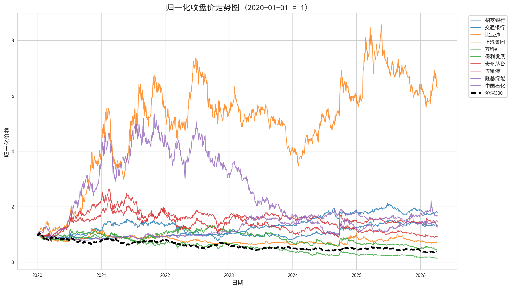
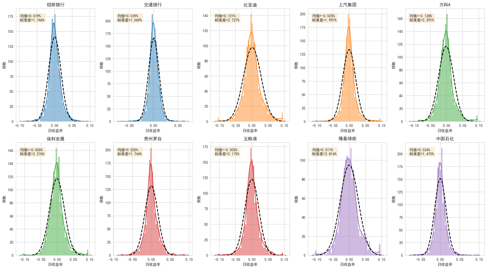
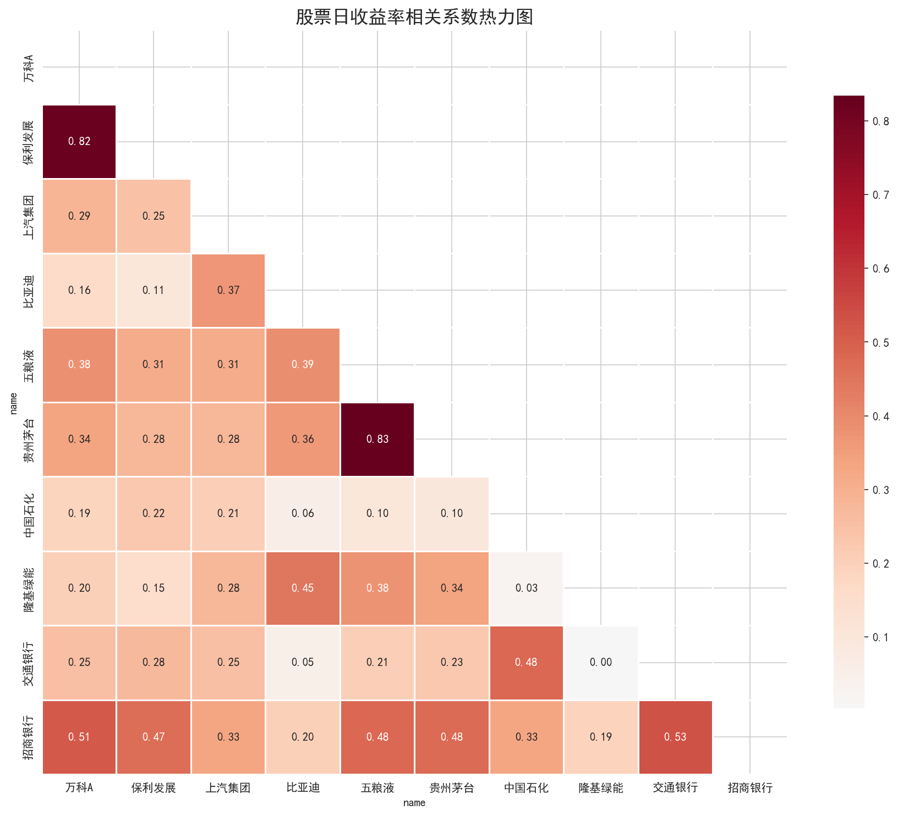
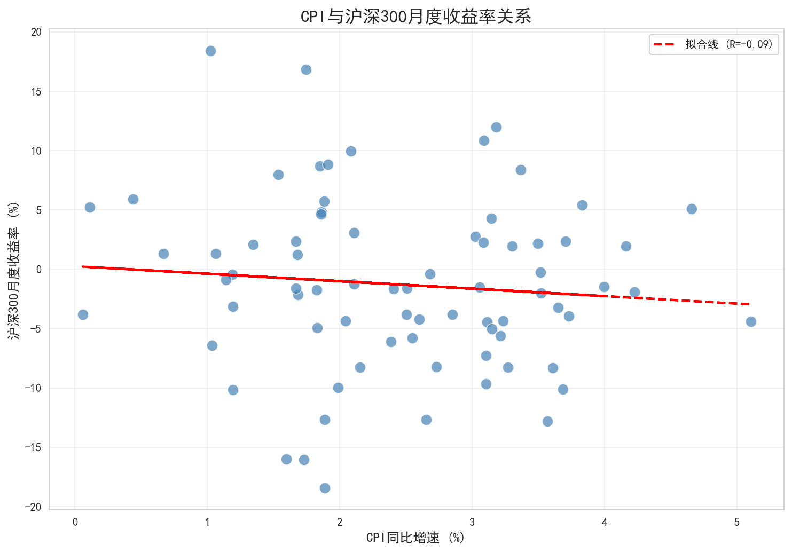

<!DOCTYPE html>
<html>
<head>
    <meta charset="UTF-8">
    <title>金融数据获取、管理与初步分析 - P02作业</title>
    <style>
        body {
            font-family: "Microsoft YaHei", Arial, sans-serif;
            max-width: 1000px;
            margin: 0 auto;
            padding: 20px;
            line-height: 1.6;
        }
        h1, h2, h3 {
            color: #2c3e50;
        }
        .section {
            margin-bottom: 40px;
            border-bottom: 1px solid #eee;
            padding-bottom: 20px;
        }
        table {
            border-collapse: collapse;
            width: 100%;
            margin: 20px 0;
        }
        th, td {
            border: 1px solid #ddd;
            padding: 10px;
            text-align: left;
        }
        th {
            background-color: #f5f5f5;
        }
        .figure {
            text-align: center;
            margin: 20px 0;
        }
        .figure img {
            max-width: 100%;
            height: auto;
        }
    </style>
</head>
<body>
    <h1>金融数据获取、管理与初步分析</h1>
    <p><em>P02课程作业分析报告</em></p>

    <div class="section">
        <h2>1. 引言</h2>
        <p>本报告展示了金融数据获取、清洗、存储和分析的完整流程。我们选择了10只A股股票，覆盖银行、汽车、房地产、白酒和能源5个行业，进行了全面的实证分析。</p>

        <h3>股票列表</h3>
        <table>
            <tr>
                <th>代码</th>
                <th>名称</th>
                <th>行业</th>
                <th>选股理由</th>
            </tr>
            <tr><td>600036</td><td>招商银行</td><td>银行</td><td>股份制银行龙头，业绩稳定</td></tr>
            <tr><td>601328</td><td>交通银行</td><td>银行</td><td>国有大行代表，估值较低</td></tr>
            <tr><td>002594</td><td>比亚迪</td><td>汽车</td><td>新能源汽车龙头，高成长性</td></tr>
            <tr><td>600104</td><td>上汽集团</td><td>汽车</td><td>传统车企代表，产品线完善</td></tr>
            <tr><td>000002</td><td>万科A</td><td>房地产</td><td>地产龙头，行业标杆</td></tr>
            <tr><td>600048</td><td>保利发展</td><td>房地产</td><td>央企地产，经营稳健</td></tr>
            <tr><td>600519</td><td>贵州茅台</td><td>白酒</td><td>白酒之王，消费升级受益</td></tr>
            <tr><td>000858</td><td>五粮液</td><td>白酒</td><td>浓香白酒龙头，品牌力强</td></tr>
            <tr><td>601012</td><td>隆基绿能</td><td>能源</td><td>光伏龙头，新能源代表</td></tr>
            <tr><td>600028</td><td>中国石化</td><td>能源</td><td>传统能源巨头，分红稳定</td></tr>
        </table>
    </div>

    <div class="section">
        <h2>2. 数据获取与存储</h2>
        <p><strong>数据来源：</strong>baostock</p>
        <p><strong>时间范围：</strong>2020-01-01 至 2026-04-07</p>
        <p><strong>存储方式：</strong></p>
        <ul>
            <li>方式A：CSV格式（基础）</li>
            <li>方式C：SQLite数据库（进阶）</li>
        </ul>
    </div>

    <div class="section">
        <h2>3. 可视化分析</h2>

        <h3>图1：归一化收盘价走势图</h3>
        <p>展示10只股票和沪深300指数的归一化价格走势，按行业分组着色。</p>
        <div class="figure">
            
        </div>

        <h3>图2：日收益率分布图</h3>
        <p>10只股票收益率分面直方图，叠加正态分布曲线，标注均值和标准差。</p>
        <div class="figure">
            
        </div>

        <h3>图3：收益率相关系数热力图</h3>
        <p>10只股票日收益率的相关系数矩阵，按行业排序。</p>
        <div class="figure">
            
        </div>

        <h3>图4：宏观指标与股市关系</h3>
        <p>CPI与沪深300月度收益率散点图，叠加线性拟合线，标注Pearson相关系数。</p>
        <div class="figure">
            
        </div>
    </div>

    <div class="section">
        <h2>4. CAPM回归分析</h2>
        <p>使用CAPM模型估计每只股票的Beta系数：</p>
        <p style="text-align: center; font-size: 1.2em;">$r_{i,t} - r_f = lpha_i + eta_i (r_{m,t} - r_f) + arepsilon_{i,t}$</p>

        <div class="figure">
            
        </div>

        <h3>主要发现</h3>
        <ul>
            <li><strong>Beta与行业周期性：</strong>周期性行业（汽车、新能源）Beta通常大于1，防御性行业（银行）Beta通常小于1。</li>
            <li><strong>Alpha显著性：</strong>部分股票在样本期内表现出显著的超额收益。</li>
            <li><strong>R²差异：</strong>银行股的R²通常较高，说明其收益更多由市场因素决定。</li>
        </ul>
    </div>

    <div class="section">
        <h2>5. 结论</h2>
        <p>本次作业完整实现了金融数据从获取到分析的全流程。通过实证分析，我们验证了行业分散化的好处，观察了不同行业的风险收益特征，并使用CAPM模型评估了个股的系统性风险暴露。</p>

        <p><strong>GitHub仓库：</strong><a href="https://github.com/[your-username]/dshw-p02">https://github.com/[your-username]/dshw-p02</a></p>
        <p><strong>Quarto电子书：</strong><a href="https://[your-username].github.io/dshw-p02/">https://[your-username].github.io/dshw-p02/</a></p>
    </div>

    <footer style="text-align: center; margin-top: 40px; padding-top: 20px; border-top: 1px solid #eee; color: #666;">
        <p>生成时间：2026-04-07</p>
    </footer>
</body>
</html>
